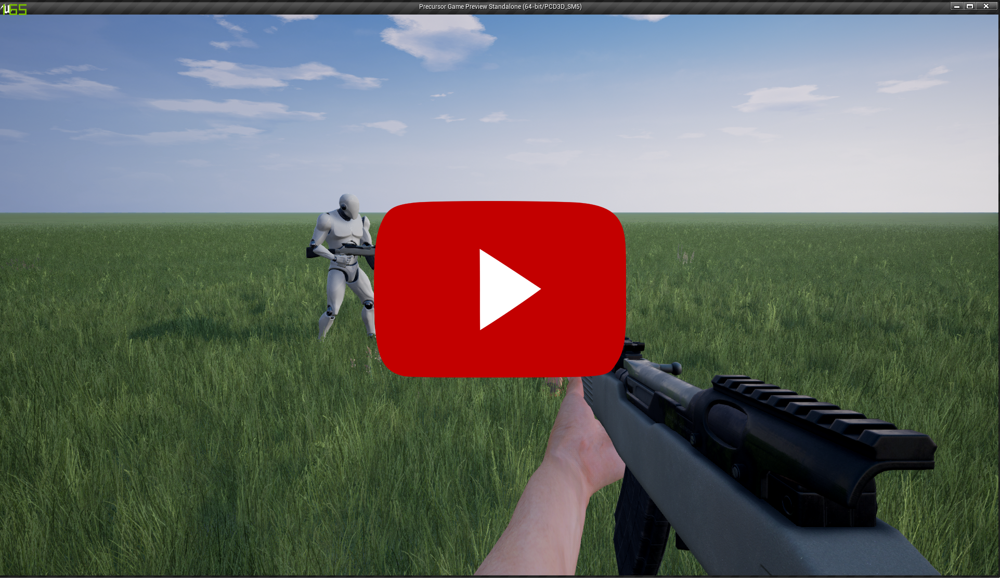

Precursor
The story for Precursor is still under wraps.
Background
This project is a restart of my first Unreal Engine 4 project "Forge". And will prove to be my most ambiguous project yet.
Videos
Small Demo: 
Downloads
Sorry, this project is still too early in development to provide a playable alpha.
References
Epic Games. (2016). Unreal Engine 4. [online] Available at: https://www.unrealengine.com/what-is-unreal-engine-4 [Accessed 17 April. 2016].
IronBelly Studios. (2016). IronBelly Studios. [online] Available at: http://ironbellystudios.com/ [Accessed 17 April. 2016].
Cubit Studios. (2016). Cubit Studios. [online] Available at: http://www.cubitstudios.com/ [Accessed 17 April. 2016].